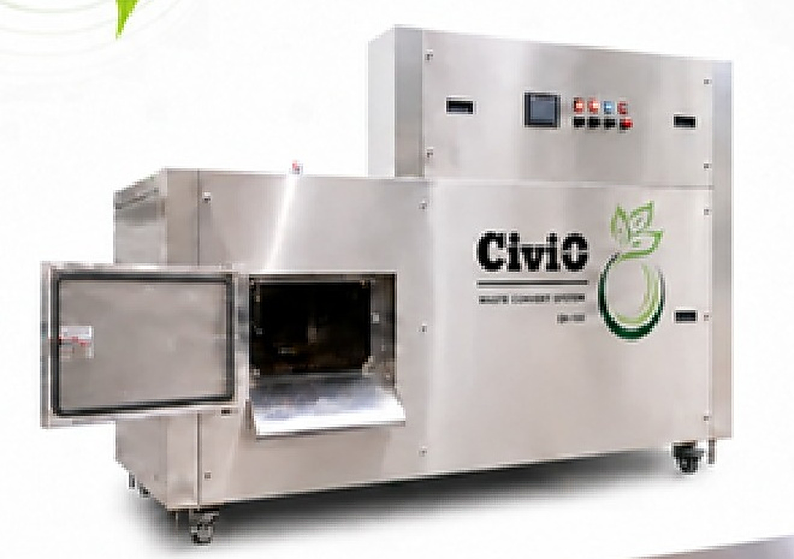
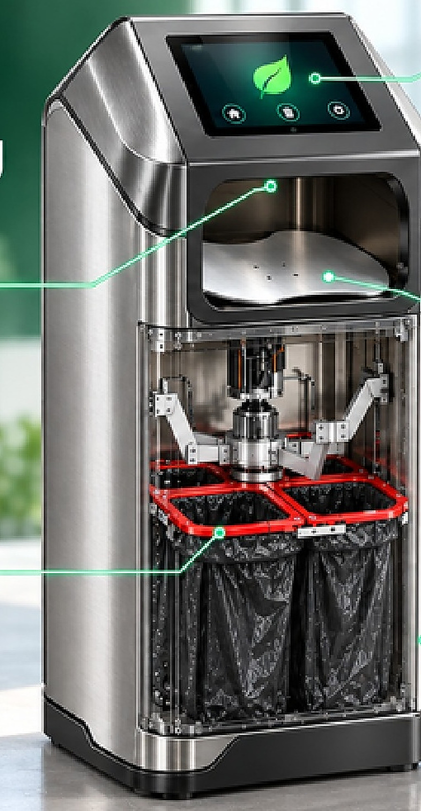

ภาพรวมกิจกรรม
การจัดแสดงผลิตภัณฑ์เป็นโอกาสให้ผู้สนใจได้เห็นแนวคิดและทำความรู้จักนวัตกรรมที่เกี่ยวข้องกับการจัดการขยะอินทรีย์และการใช้ทรัพยากรอย่างคุ้มค่า
ผลิตภัณฑ์ที่ได้เห็นในงาน
CIVIO มีทั้งเครื่องกำจัดขยะเศษอาหารที่เปลี่ยนเศษอาหารเป็นสารปรับปรุงดิน และถังขยะอัจฉริยะ KAIBIN ที่ช่วยคัดแยกขยะตั้งแต่จุดทิ้ง ดูรายละเอียดแต่ละรายการได้ที่หน้าผลิตภัณฑ์
แกลเลอรีภาพกิจกรรมภาพผลิตภัณฑ์ CIVIO · แตะภาพเพื่อดูขนาดใหญ่


แหล่งข้อมูลภาพและหัวข้อข่าวอ้างอิงจากเนื้อหาที่เผยแพร่โดย Massdyna ดูข่าวต้นฉบับ ↗
← ข่าวสารและกิจกรรม